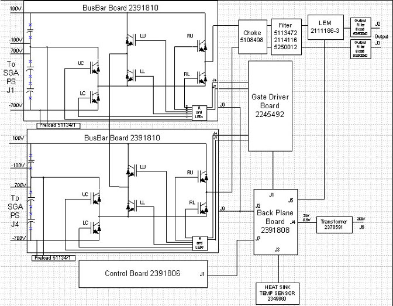
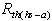
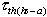
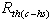
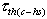
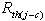
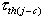

Proprietary to General Electric Company
Direction 5440000, Rev# 5
Signa HDxt Service Methods
Module Version 1.0, Version Date 4/25/07
Proprietary to General Electric Company |
| Last Update | 04/05/2005 |
The High Fidelity Amplifier (HFA) is an IGBT based switching voltage amplifier that is part of High Fidelity Driver (HFD) . There are three separate identical HFA‘s and one power supply per HFD system. The HFA provides the voltage and current to the gradient coil during scanning. HFD differs from SGD in that current control during flattops is by pulse width modulation (PWM) of the HFA output bridge instead of GPM linear amplifiers.
The inputs to the HFA are voltage and current commands from the Gradient Processor Board (GP3). The HFA has two floating outputs that are wired in series to provide the total gradient driver voltage. Also, internal to HFA is the current sensor, which provides a current feedback signal to the GP3.
The HFA is composed of: 2 IGBT inverters and choppers, output filters, HFA Control board, HFA gate driver board, Bus Bar board, Backplane board, LEM current sensors, and associated cabling / packaging. See Illustration 1.
Illustration 1: HFA Block Diagram

The High Fidelity Amplifier(s) (HFA[s]) is an IGBT based switching voltage amplifier that is part of theHigh Fidelity Driver(s) (HFD[s]) . There are three separate and identical HFAs and one power supply per HFD(s) system. The HFA(s) provide the voltage and current to the gradient coil during scanning. HFD(s) differs from SGD in that current control during flattops is by pulse width modulation (PWM) of the HFA output bridge instead of the GPM linear amplifiers. It differs from ACGD in that the GP and Amplifier Control Boards have been replaced to improve waveform fidelity and image quality. It is a subset of the changes introduced with HFD.
The inputs to the HFA(s) are voltage and current commands from the Gradient Processor Board (GP3). The HFA(s) has two floating outputs that are wired in series to provide the total gradient driver voltage. Also, internal to HFA(s) is the current sensor, which provides a current feedback signal to the GP3.
The HFA is composed of: 2 IGBT inverters and choppers, output filters, HFA Control board, SGA gate driver board, Bus Bar board, Voltage Sense Board, Backplane board, LEM current sensors, and associated cabling / packaging. See Illustration 1.
The performance requirements for the HFA are shown in Table 1.
Table 1: PERFORMANCE REQUIREMENTS
| Parameter | Units | Conditions |
| Dynamic Performance Peak Current (min) | 320 A | Peak Current rating including eddy current pre-emphasis. |
| Inverter Bus Voltage | 100/800 V | Inverter Bus Voltage (Flattop/Ramp) for each inverter |
| Voltage Output (min) | 1400 V | Minimum Voltage Output at peak current (320 A) from both inverters. |
| Duty Cycle RMS Current T < 0.1s 0.1< T < 1000s T > 1000s (continuous) | 320 A 100 A | Instantaneous short time maximum current Maximum time-current characteristics limited by IGBT junction temperatures as determined by Simulink model in ACGD SSDS Minimum long term thermal limitation. May be higher as determined by the Simulink model. |
| Max. Ave. Power Dissapation | 2.5 KW | Continuous power dissapation limit |
| Power Loss Parameters per IGBT: Rsat Vsat Vsw Ramps Flattops  (Heatsink thermal resistance)  (Heatsink thermal time constant)  (IGBT case to heatsink thermal res.)  (IGBT case to Heatsink thermal time constant)  (Junction to IGBT case thermal res.)  (Junction to case thermal time constants) | .00175 Ohm 1.5 V 15 V 2.25 V 15 C/KW 100 sec 10 C/KW 10 sec 5.8, 14.3, 11.4 C/KW .003, .06, 1 sec | Parameters for Simulink power loss model: Slope of IGBT V-I curve Offset of IGBT V-I curve Equivalent IGBT voltage due to switching loss Chopper loss @ 700V, 31.25Khz Bridge loss @ 100V, 31.25Khz Whole heatsink at 1400LFM IGBT module baseplate to heatsink with grease 3 internal IGBT Rtheta, TC pairs |
| Output Fidelity Voltage Bandwidth (min) | 7 KHz | -3dB Bandwidth at full power |
The performance requirements for the current sensor are listed in Table 2.
Table 2: CURRENT SENSOR PERFORMANCE REQUIREMENTS
| Parameter | Value | Units | Conditions |
| Measuring Range | +/-400 | A | |
| Gain | 40 | A/V | |
| Current Offset | +/-1.5m | A | +10 to +50 C |
| Linearity | .1% | % | |
| Bandwidth | 150k | Hz | -1dB |
The error conditions described in Table 3 shall cause a Fault to occur and the HFA to shut down (come out of READY).
Table 3: ERROR CONDITIONS
| Fault | Error | Signal Name | Comments |
| Over Current | I > 400 A | OCINST | Current at +Coil Output |
| Average overcurrent | I>135A/20sec | OCAVG | RMS higher/depends on PSD |
| Over Voltage | V > 850 V | OV | Input voltage on Chopper |
| Under Voltage | V < 50 V | UV | Input voltage on LV bus cap |
| Wiring fault | Wire | Cable or PCB not connected | |
| Heat Sink Over Temp | T > 75 C | HSOT | IGBT Heatsink Temp. |
| Low voltage Control Under Voltage | +15V: V < +10 V -15V: V > -10 V +5V: V < +3 V +15GD: V<12V IGD: I>5Amps | CUV | Monitors Control Bd. PS voltages and gate driver current |
Dimensions:
The dimensions of the SGA chassis are 17” W x 8” H x 25” L.
External Connectors:
Connectors mating external to the HFA are listed in Table 4. They are located on the rear panel of the HFA chassis.
Table 4: EXTERNAL SGA CONNECTORS
| Connector Name | style | to / from | Comments |
| Control | 37 pin sub-D | GP3 | |
| Inverter Outputs: +Coil / -Coil | 1/2” stud | Coil | |
| DC High Voltage Power | (Amphenol - MS type) | SGA-PS | 2 connectors/ 700V/100V |
| AC Power | 208V 1 phase | PDU | P<100W |
Control Board LEDs
Table 5: HFA LEDS
| LED | NAME | TYPE | DESCRIPTION |
| D1A | ICOIL | Red/Green | Output current indicator |
| DS1B | VFILT | Red/Green | Output bus Voltage indicator |
| DS2A | OCINST | Amber | Instantaneous Over Current Fault |
| DS2B | OCAVG | Amber | Average Over Current Fault |
| DS3A | SPARE | Amber | Spare LED, Will be lit |
| DS3B | HSOT | Amber | Over temperature of Heat Sink Fault |
| DS4A | OV | Amber | Over Voltage Fault |
| DS4B | UV | Amber | Under Voltage Fault |
| DS5A | WF | Amber | Wire Fault |
| DS5B | CUV | Amber | Control/Gate Driver under voltage |
| DS6A | LC | Red/Green | Lower chopper state |
| DS6B | HC | Red/Green | Higher chopper state |
| DS7A | HL | Red/Green | High Left Bridge State |
| DS7B | HR | Red/Green | High Right Bridge State |
| DS8A | LR | Red/Green | Lower Right Bridge State |
| DS8B | LL | Red/Green | Lower Left Bridge State |
| DS9A | SPARE | Red/Green | SPARE |
| DS9B | GATDR | Red/Green | Gate Driver Power Supply LED |
| DS10A | MODE | Red/Green | Mode Indicator |
| DS10B | ENABLE | Red/Green | Enable Indicator |